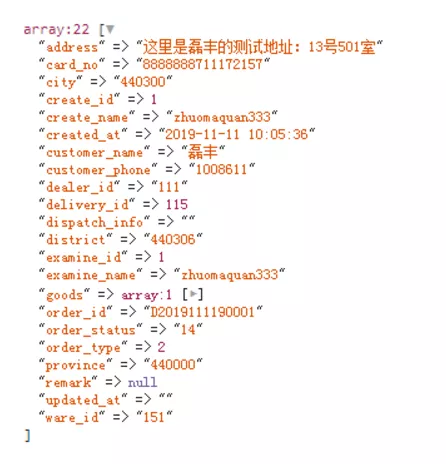
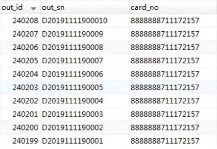

原文连接:https://www.cnblogs.com/heyue0117/p/11917577.html
官方解释yield
yield生成器是php5.5之后出现的，官方文档这样解释：yield提供了一种更容易的方法来实现简单的迭代对象，相比较定义类实现 Iterator 接口的方式，性能开销和复杂性大大降低。
生成器的核心是一个yield关键字，一个生成器函数看起来像一个普通的函数，不同的是：普通函数返回一个值，而一个生成器可以yield生成许多它所需要的值。生成器函数被调用时，返回的是一个可以被遍历的对象。
yield和return有点类似，不过不同的是，return会返回值并且终止代码的执行，而yield会返回一个值给循环调用此生成器的代码并且只是暂停执行生成器函数。
这里顺便给大家介绍一下php版本的非缓冲查询
意思即是 把数据一行行 读取到php运行内存，并非一次性读取到php运行内存，众所周知，php有很多内置函数，可以帮助我们对数据进行加工操作，因为数据都在内存里面，所以能操作，但是php的运行内存是有极限，默认128M。
注意：因为非缓冲查询是 会长时间连接数据库的，有可能会造成慢查询、锁表之类的情况，比较耗mysql资源
相对非缓冲查询就是 缓冲查询：
如果用缓存查询，php内存就会直接爆了，出现内存不足的情况。好了，这里主要是为了突出yield
yield性能
生成器会对PHP应用的性能有非常大的影响
PHP代码运行时节省大量的内存
比较适合计算大量的数据
yield运用
生成器允许你在 foreach 代码块中写代码来迭代一组数据而不需要在内存中创建一个数组,那会使你的内存达到上限，或者会占据可观的处理时间。相反，你可以写一个生成器函数，就像一个普通的自定义函数一样, 和普通函数只返回一次不同的是, 生成器可以根据需要 yield 多次，以便生成需要迭代的值。
例子讲解
public function read_temp_api_order_info($number){
for($i=1; $i <= $number; $i++){
$temp_api_order_info = [
'address' => "这里是磊丰的测试地址：13号50".$i."室",
'card_no' => "8888888711172157",
'city' => "440300",
'create_id' => 1,
'create_name' => "zhuomaquan333",
'created_at' => "2019-11-11 10:05:36",
'customer_name' => "磊丰",
'customer_phone' => "1008611",
'dealer_id' => "111",
'delivery_id' => 115,
'dispatch_info' => "",
'district' => "440306",
'examine_id' => 1,
'examine_name' => "zhuomaquan333",
'goods' => [203 => 3],
'order_id' => "D201911119000".$i,
'order_status' => "14",
'order_type' => 2,
'province' => "440000",
'remark' => null,
'updated_at' => "",
'ware_id' => "151",
];
yield $temp_api_order_info;
}
}
我这里只是构建了一个数组来给大家演示，平常你在操作数据库输出数据也是一样的。转为array
//仓库库存扣除测试
public function cangku_stock()
{
//set_time_limit(0); //表示永久运行，这里我是测试array的时候用到的
$order_info = $this->read_temp_api_order_info(10); //这里我就测试了10条数据，效果是看不出来的
foreach($order_info as $temp_api_order_info){
dd($temp_api_order_info); //打印出来看看数据
//处理数据
$api_ware_id = $this->o->getCangkuApiUrl() .'ware/program/addOutWare';
$out_wares = api_request($api_ware_id, $temp_api_order_info);
$temp_out_wares = json_decode($out_wares, true);
if ($temp_out_wares['code'] != 1) {
$msg = (isset($temp_out_wares['msg']) && $temp_out_wares['msg']) ? $temp_out_wares['msg'] : var_export($out_wares, true);
throw new Exception($msg);
}
}
//dd("批量更新成功".date('Y-m-d H:i:s'));
}
可以看到我们调用 $order_info = $this->read_temp_api_order_info(10);返回了一个 Generator 对象，这个对象可以使用 foreach 迭代，每次迭代，PHP 会要求 Generator 实例计算并提供下一个要迭代的值。生成器的优雅体现在每次产出一个值之后，生成器的内部状态都会停顿；向生成器请求下一个值时，内部状态又会恢复。生成器内部的状态会一直在停顿和恢复之间切换，直到抵达函数定义体的末尾或遇到空的 return 语句为止。效果如下：

这里测试大量数据，直接更改$this->read_temp_api_order_info(10);就好，如果是计算数据表数量，那你就要改改这个方法了。自己试着更改一下吧。

这里我主要给大家讲解yield的用法，如果要看插入数据表用了多长时间，自己可以在数据表增加插入时间的字段，再看看第一条数据插入与最后一条数据插入的时候的对比的。
以上是文章全部内容，有需要学习与经验交流的友人请加入Swoole交流群学习与交流的咱们一起学习，有问题一起交流，一起进步！前提是你是学技术的。感谢阅读！